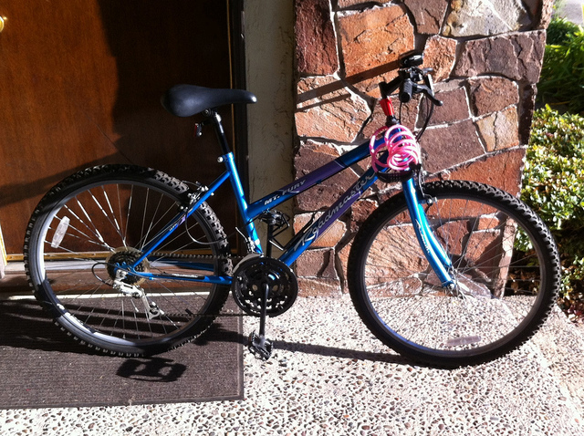

Bicycle Repair (Wo)man
| posted in diy
As many of you know, I have a NEW JOB. Hooray!
New Job is all of 2.5 miles from my house, so I figured I probably shouldn’t be a lazyass and drive. So I bought a bike. Used. Off Craigslist. Late at night from an Irish guy out of a warehouse and it was not at all sketchy.
BEHOLD. My new bike:

Yeah, yeah, okay, it’s not very impressive. “Hell of ugly” you might say. It was $80 off Craigslist. Whadda want.
It worked fine enough for 2.5 miles over flat territory, but after riding it a few times, I noticed it had a few issues:
- A complete lack of interest in going up to a higher gear
- If I got it in a higher gear, after a minute it’d decide it’d really rather not
- It made weird grumbly noises if I really really insisted on being in a higher gear
- I got too much of a workout riding the thing 2.5 miles over flat ground
Did I mention used? Craiglist? Eighty bucks?
So I went on Youtube, looked up “bicycle repair” and I’ve been able to fix most of the problems. I be writing this down so I remember what the hell I did, and maybe one of you will have a cheapass bike that needs fixing.
Bad Cable Tension
One of the first videos I found was this one, on how to adjust cable tension. Sure enough, the rear cable was hell of loose. I hand-tightened it up to where it looked OK. Shifting the rear gears worked better after that.

Bad Shifter Tension (?)
I don’t know what to call this - I couldn’t find a video on it. The problem was the front shifter would not stay in a higher gear. You ratchet it up and it would ratchet itself right back down, thank you very much.
Turns out there’s a screw on the shifter that was really, really loose.

I screwed it in until it was tight. That fixed it. Yes, I am a genius.
Front derailleur is whack
This guy, despite his annoying habit of telling you what to do, and then remembering the three steps you should do before you do that thing, walks you through adjusting the low and high limits for the derailleur. This sets how high and low it shunts the chain.
On my bike, the limit screws look like this:

Sure enough, they were wildly off on my bike, and I’m still not sure I have the high limit set right. At least I can get it into high gear.
Brakes are whack
As I finished all that stuff up, I noticed the front brakes were really tight and one side was rubbing against the tire. So THAT’s why I get a really nice workout riding the bike.
The light outside’s going, so I’ll probably adjust this tomorrow.